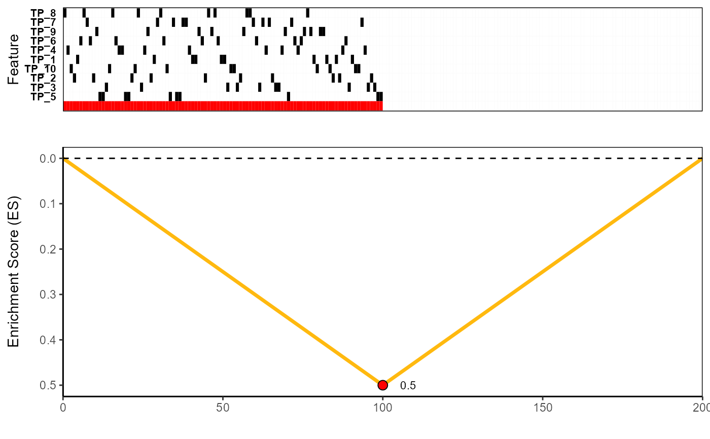

The resulting list object returned by topn_eval() when run
on the sim.ES simulated dataset. All default parameters were used
when running topn_eval() except for max.size which was set to 10
to account for the presence of 10 left-skewed (i.e. true positive or TP)
features in the sim.ES dataset.
data(topn.list)A list object returned by topn_eval
containing the ExpressionSet objects (and corresponding meta-feature scores)
for each search run when starting with each of the top 7 ranked features.
Returned ExpressionSet columns (i.e. samples) are ranked by the user-defined ranking variable.
See topn_eval for more information.
Kartha VK, Kern JG, Sebastiani P, Zhang L, Varelas X, Monti S (2017) CaDrA: A computational framework for performing candidate driver analyses using binary genomic features. (bioRxiv)
# Load pre-computed Top-N list generated for sim.ES dataset
data(topn.list)
# To fetch each search result (Expression Set and score of the corresponding meta-feature)
# For N=1 (result when the search is initiated with the top-scoring starting feature)
topn.list[[1]]
#> $ESet
#> ExpressionSet (storageMode: lockedEnvironment)
#> assayData: 10 features, 200 samples
#> element names: exprs
#> protocolData: none
#> phenoData: none
#> featureData
#> featureNames: TP_8 TP_7 ... TP_5 (10 total)
#> fvarLabels: Feature Type
#> fvarMetadata: labelDescription
#> experimentData: use 'experimentData(object)'
#> Annotation: TN_405
#>
#> $Score
#> TN_405
#> 3.338238e-15
#>
# To fetch just the ExpressionSet object
topn.list[[1]]$ESet
#> ExpressionSet (storageMode: lockedEnvironment)
#> assayData: 10 features, 200 samples
#> element names: exprs
#> protocolData: none
#> phenoData: none
#> featureData
#> featureNames: TP_8 TP_7 ... TP_5 (10 total)
#> fvarLabels: Feature Type
#> fvarMetadata: labelDescription
#> experimentData: use 'experimentData(object)'
#> Annotation: TN_405
# ExpressionSet for the search result when starting with the second-best feature
topn.list[[2]]$ESet
#> ExpressionSet (storageMode: lockedEnvironment)
#> assayData: 10 features, 200 samples
#> element names: exprs
#> protocolData: none
#> phenoData: none
#> featureData
#> featureNames: TP_8 TP_7 ... TP_5 (10 total)
#> fvarLabels: Feature Type
#> fvarMetadata: labelDescription
#> experimentData: use 'experimentData(object)'
#> Annotation: TP_8
# Or we can find the result that had the best score over the top N (N=7) runs
best_meta <- topn_best(topn.list)
# You can now visualize this result using the meta_plot() function
meta_plot(best_meta)

# Or you can visualize the overlap of features across the top N (N=7) returned meta-features
# We do this by passing the topn.list object to the topn_plot() function
topn_plot(topn.list)
#> Generating top N overlap heatmap..
#>